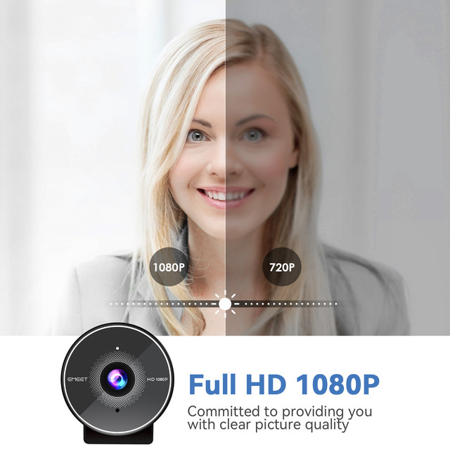
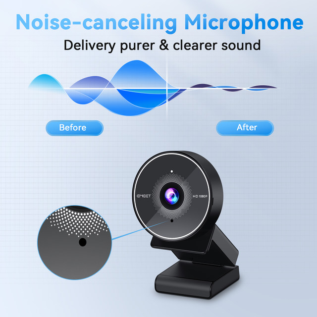
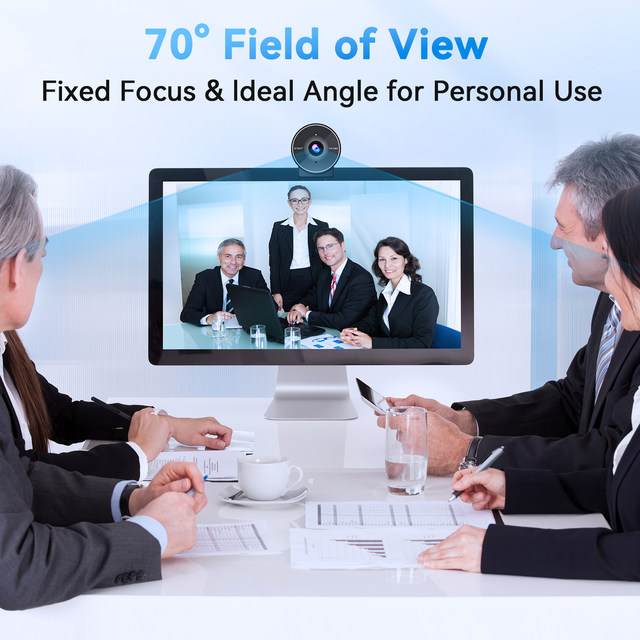
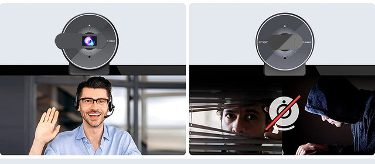
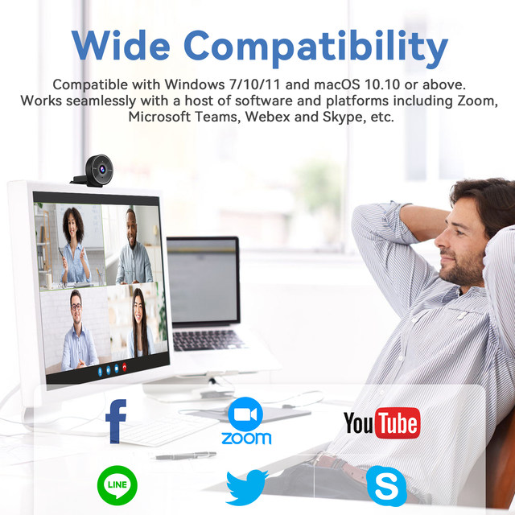
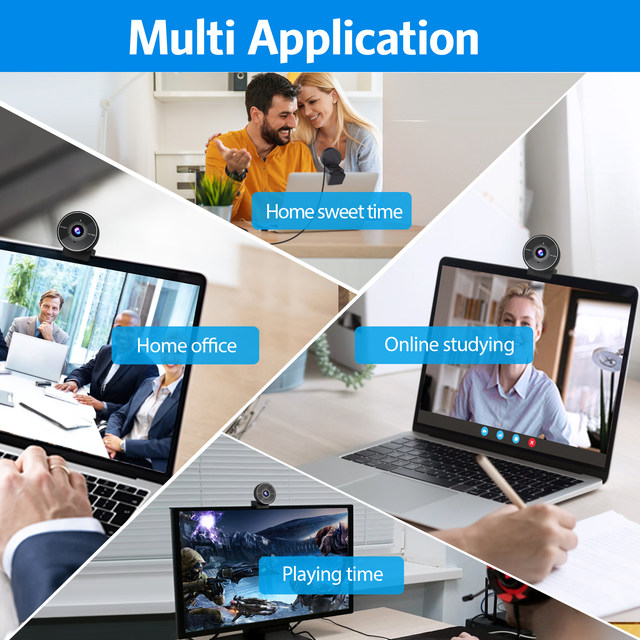

FHD Video Quality
FHD 1080P resolution with fixed focus delivers crystal-clear and detailed images

Built-in Noise-cancelling Mic
The built-in microphone with noise cancellation algorithm delivers purer and clearer sound to the other end of the call. Speak out your ideas anytime and fear no distracting noise

70° Small View
The 70° ultra angle lens under web cameras for computers would be a good fit for personal use, such as online conferences or classes

Physical Privacy Cover
Comes with a physical privacy cover. Just draw it slightly and your privacy will be protected in no time


